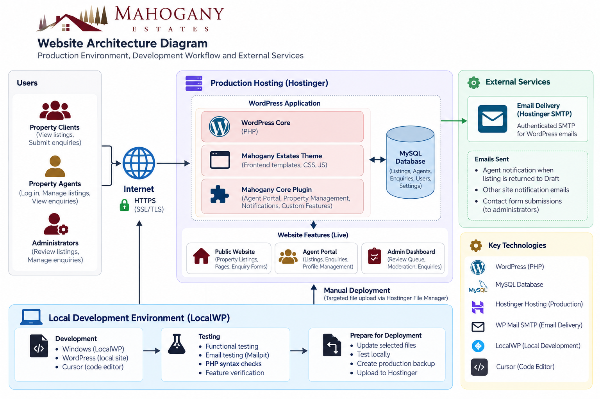
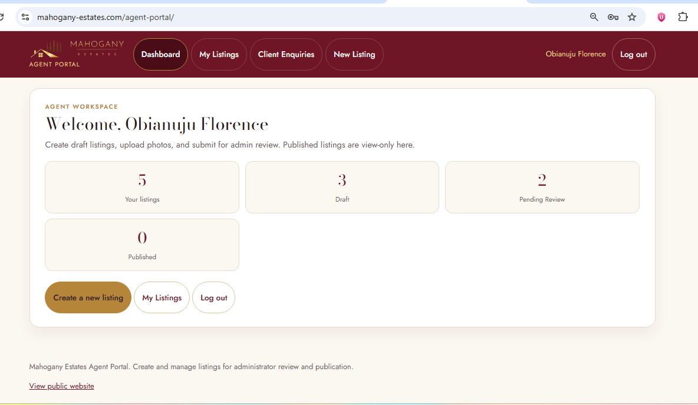
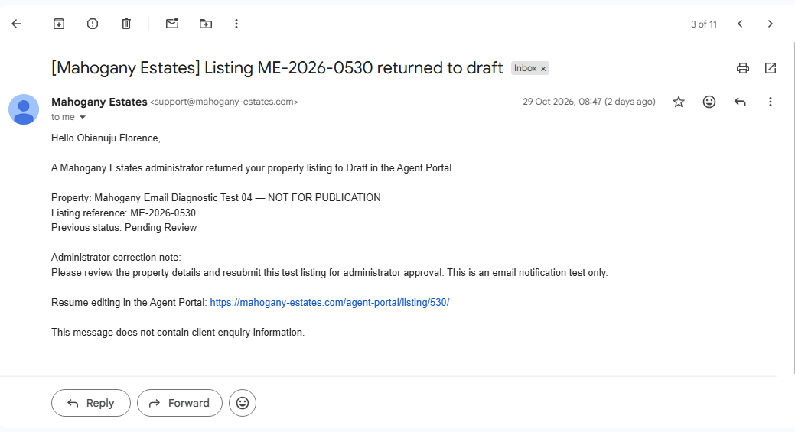
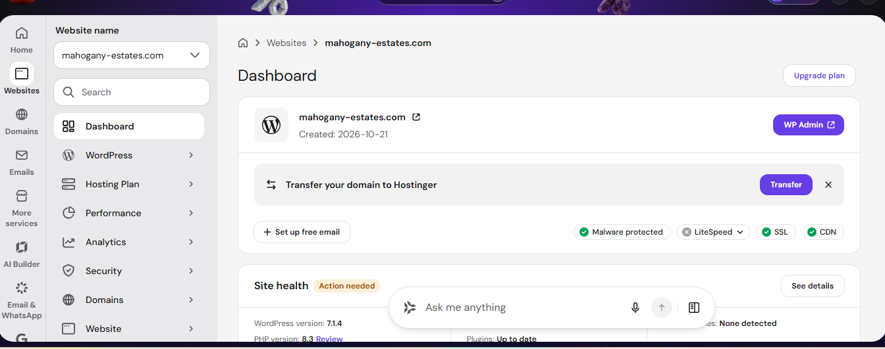

Agent Portal
A dedicated workspace supporting property listings, agent submissions, administrative reviews and client enquiry management.
Case Study · WordPress · Deployment & Operations
Developed and supported the deployment of a WordPress real estate platform with property listings, agent workflows, administrative moderation and automated email notifications.
Production website. Application internals and sensitive operational information are excluded from this case study.
WordPress real estate web application
Website Developer & Deployment Administrator
LocalWP development and Hostinger production hosting
Mahogany Estates is a real estate web application designed to support property marketing, agent operations, client enquiries and administrative property management. I worked on application development, configuration, production deployment and operational testing.
The work involved moving updates from a local WordPress development environment to a live hosting environment, while checking that key property management and notification workflows continued to function correctly.
System Design
The diagram illustrates the main application components, data storage, email delivery path and development-to-production workflow based on the technologies used in this project.
Users and Browsers
Property visitors · Agents · Administrators
Domain and HTTPS
mahogany-estates.com · Encrypted web access
Hostinger Production Hosting
Web hosting environment
WordPress Application
PHP
Application logic
Custom Theme
Website presentation
Application Plugin
Property and workflow functionality
MySQL Database
WordPress content and application records
Email path for the property correction notification workflow.
Property Workflow
Administrator returns a listing to Draft.
WordPress Mail
Generates the notification.
WP Mail SMTP
Uses configured Hostinger SMTP.
Agent Inbox
Receives the notification.
1. Local Development
Windows · LocalWP · Cursor
2. Validation
PHP syntax checks, functional testing and Mailpit.
3. Production Backup
Back up the affected production files.
4. Targeted Deployment
Upload selected files through Hostinger File Manager.
5. Smoke Testing
Check affected pages and workflows.
6. Release Verification
Verify live behaviour and actual email receipt.
I worked on the development, configuration, deployment and operational testing of the website. My contribution focused on WordPress application functionality, controlled production changes and verification of critical property and email workflows.
Worked with a custom WordPress theme and application-specific plugin, supporting property management, agent workflows and administrative functionality.
Maintained a local development environment using LocalWP and managed the relevant application files across local development and production hosting.
Backed up affected production files and deployed selected PHP, template and CSS changes using Hostinger File Manager, followed by production checks.
Tested locally generated emails with Mailpit and verified the production notification workflow by checking actual receipt in a recipient inbox.
Tested listing status changes, correction notes, agent editing access and the relevant post-deployment workflows. Used fictional test listings and kept them out of the public property catalogue.
A dedicated workspace supporting property listings, agent submissions, administrative reviews and client enquiry management.
Administrators can review submitted listings, approve eligible properties or return listings to Draft with correction notes.
Administrators can return published listings to Draft through the Agent Portal, allowing corrections without deleting property records.
When a listing is returned to Draft, the assigned author receives a notification containing the property reference, previous status, correction note and an editing link.
Administrative tools support reviewing client enquiries and reassigning them to agents.
Project Evidence
Selected screenshots demonstrates the application implementation, deployment process and validation of important workflows. Each item should show actual work performed on the project.

Custom theme or plugin implementation in the development environment.

A sanitized view of a listing's review, correction or status-change workflow.

Mailpit output or a sanitized notification demonstrating the tested email workflow.

A safe screenshot of targeted file deployment or post-deployment verification.
Make application changes in the LocalWP development environment.
Check modified PHP files for syntax errors and test relevant application behaviour and email generation.
Preserve recoverable copies of the files being changed.
Upload only the required application files through Hostinger File Manager rather than replacing entire application directories unnecessarily.
Check the affected administrative pages, listing status changes and agent editing access.
Confirm the relevant production behaviour and verify actual notification receipt where applicable.
I identified the relevant application file paths, deployed selected changes and checked the live application after updates.
A successful application-level mail operation does not prove inbox delivery. I used Mailpit for local testing and checked a real recipient inbox for production notification verification.
I used clearly labelled fictional test listings and kept them out of the public property catalogue.
I tested the relevant transitions from Published or Pending Review to Draft while checking record preservation, correction notes and agent editing access.
This project reinforced the importance of treating deployment as an operational process rather than simply uploading files. I learned to validate changes locally, preserve recoverable production copies, distinguish application-level success from end-to-end email delivery, and verify critical workflows after each release.
Potential next steps to strengthen the deployment and operational process include:
These are proposed improvements, not capabilities claimed as already implemented.
This case study describes my contribution at a high level. Credentials, private customer information, sensitive hosting details and confidential operational data have been excluded. Technical evidence is included only where it is appropriate to share publicly.